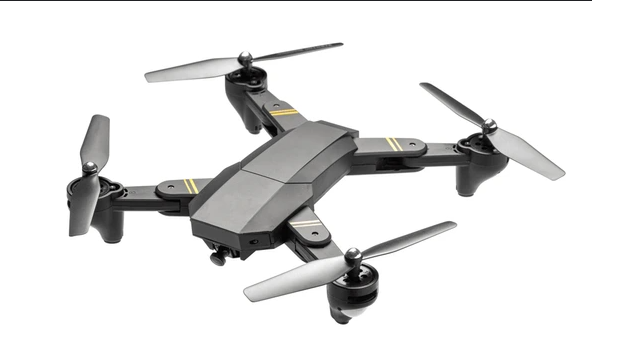

Каскадні таблиці стилів (CSS) дозволяють витримати в єдиному стилі безліч документів. Для цього ми використовуємо зв’язування (Linking), де стильові призначення зберігаються в окремому файлі .css і підключаються до кожної HTML-сторінки за допомогою тегу .
 Цей абзац має зображення, вирівняне ліворуч. Як бачимо, текст обтікає його праворуч, згідно з визначенням стилю 'img' у файлі CSS. Усі абзаци мають курсивний стиль, червоний рядок (відступ) і вирівняні по ширині, як того вимагає завдання.
Перейдіть на: Сторінка 2 | Сторінка 3 (Зверніть увагу на колір посилань)
Щоб змінити вирівнювання зображення, ми можемо використати клас CSS, наприклад, '.img-right', який розташовує зображення праворуч, а текст обтікає його ліворуч.